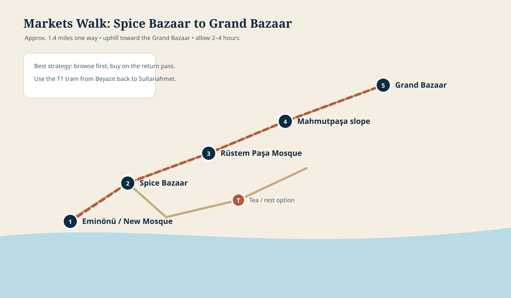

Istanbul chapters
Best startNear opening
PaceUnhurried
PrioritySpice Bazaar
Keep freeLate afternoon
Browse with a purpose
The Spice Bazaar is compact enough to enjoy without turning the day into an endurance test. Walk through once before buying, compare quality and prices, and let color, scent and conversation be the main event.
,_Istanbul_-_Tarik_Kaan_Muslu.jpg?width=1400)

_Dried_fruits_and_Turkish_delight_(29784342762).jpg?width=1200)

Choose your emphasis
Spice Bazaar
Turkish delight, tea, dried fruit, spices and small edible gifts. Keep purchases compact and easy to pack.
Grand Bazaar
Use it as an architectural walk and browsing experience rather than trying to cover every lane.
Do not overfill this day: leave time to repack, review boarding instructions and sleep well before embarkation.
A simple buying strategy
- Walk the arcade once without purchasing.
- Sample only from stalls that display products cleanly and clearly.
- Confirm price by weight before an order is packed.
- Choose sealed packages for anything going into checked luggage.
Photographs are credited on the Photo Credits page.
Markets walking route
